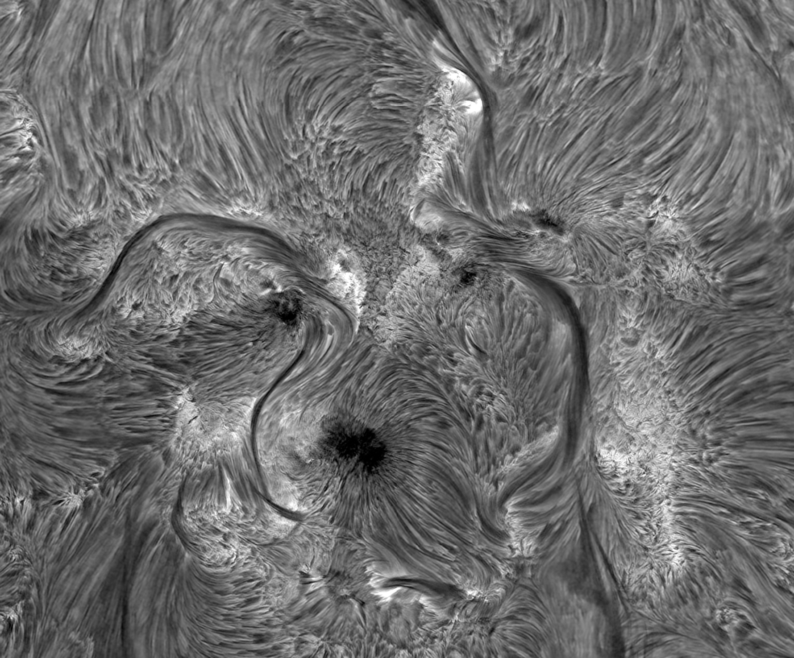

Modelling and observing the lower solar atmosphere: new solutions to old problems
- Status: Completed
- Chairs: Dr Malcolm Druett (Stockholm University, Sweden), Dr Ben Snow (Exeter University, UK)
- Article: New eyes and ideas for the chromosphere
- Venue: Burlington House, London, UK
- Abstract: This year, numerous telescopes and cutting edge instruments are seeing first light as well as satellites being launched that will observe the solar photosphere, chromosphere, and transition region with unparalleled spatial, temporal, and spectral resolution. In this session, observational discoveries will be simultaneously compared to, and contrasted with, the latest breakthroughs from numerical models of the chromosphere.
Specifically the following issues will be addressed:
- Advances in instrumentation for observing the lower solar atmosphere.
- New insights from numerical modelling and observations of chromospheric features such as fibrils, spicules, jets, Ellerman bombs, and flares, as well as the energy transported via particles and waves in such features.
- The transport of energy between the chromosphere and the photosphere or corona, and how new discoveries alter our understanding of the fundamental energy budgets of the solar atmosphere.
The goals are the dissemination of new ideas and addressing ongoing debates informed by the latest information.
